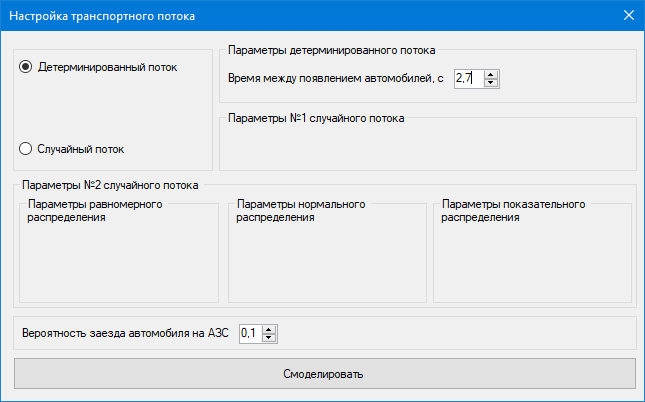
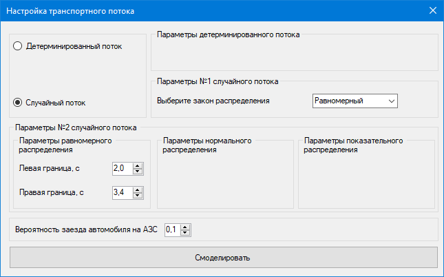
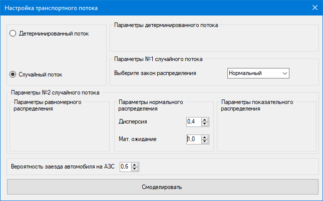
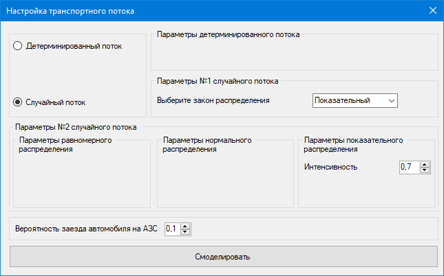

В экранной форме «Настройка транспортного потока» пользователь может настроить параметры транспортного потока или перейти к процессу моделирования с помощью нажатия кнопки «Смоделировать».
Пользователь может выбрать детерминированный или случайный поток с помощью выбора соответствующих радиокнопок.
Если выбран «Детерминированный поток», то система отображает поле «Время между появлением автомобилей, с». В данном поле пользователь может указать интервал времени, по истечению которого будут появляться новые машины в транспортном потоке. На рисунке 1 изображена настройка детерминированного потока.

Рисунок
1 – Настройка детерминированного потока
Если выбран «Случайный поток», то система отобразит поле, где пользователю необходимо выбрать ЗР (равномерный, нормальный и показательный) и задать его параметры. На рисунках 2 – 4 изображена настройка параметров ЗР.

Рисунок
2 – Настройка равномерного ЗР

Рисунок
3 – Настройка нормального ЗР

Рисунок
4 – Настройка показательного ЗР
Пользователь может менять параметр поля, который отвечает за вероятность заезда автомобиля на АЗС. На рисунке 5 изображена настройка данного параметра.
Рисунок
5 – Настройка вероятности заезда
автомобиля на АЗС
Если указанные параметры введены верно, то при нажатии на кнопку «Смоделировать» система отобразит экранную форму «Моделирование», иначе система выдаст ошибку, в которой будет указанно, какие параметры были указаны неверно.